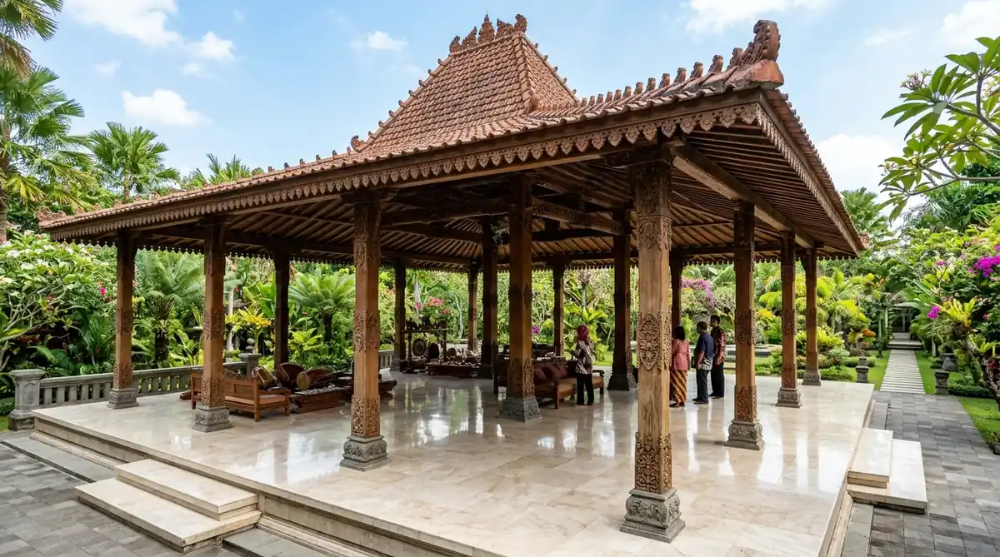

Daftar Isi Artikel
Kediri Event — Kediri International Film Festival 2026 tercantum dalam kalender event Kabupaten Kediri dengan rencana pelaksanaan 27-29 November 2026 di Pendopo Panjalu Jayati, bertema "Kalibrasi (Mythology & Prophecy)", sementara program pemutaran, cara mendaftar film, dan tiket belum diumumkan resmi saat halaman ini ditulis.
Ringkasan Inti Rencana KIFF 2026:
- Bagian Kalender Wisata: Kepala Disparbud Kabupaten Kediri menyebut Kediri International Film Festival sebagai bagian dari kalender event 2026.
- Rencana Pelaksanaan: Daftar acara Kabupaten Kediri 2026 mencatat rencana pelaksanaan pada 27-29 November 2026.
- Lokasi Acara: Lokasi yang tercatat adalah Pendopo Panjalu Jayati, Kabupaten Kediri.
- Tahap Pengumuman Teknis: Program pemutaran, kategori lomba, cara mendaftarkan film, dan harga tiket belum dirilis di sumber resmi.
- Dinamika Jadwal: Jadwal pada kalender daerah masih bisa mengalami penyesuaian, sehingga kami akan memperbarui halaman ini segera setelah panitia merilis kabar resmi.
Fakta yang Sudah Tercatat tentang KIFF 2026
Nama event, rencana tanggal, lokasi, dan tema adalah empat fakta yang sudah tercatat tentang Kediri International Film Festival 2026 dalam daftar acara Kabupaten Kediri.
| Komponen | Informasi | Status |
|---|---|---|
| Nama Event | Kediri International Film Festival | Tercantum dalam Kalender Disparbud |
| Rencana Tanggal | 27-29 November 2026 | Rencana Awal (Menunggu Panitia) |
| Lokasi Acara | Pendopo Panjalu Jayati, Kabupaten Kediri | Rencana Awal |
| Tema Tercantum | Kalibrasi (Mythology & Prophecy) | Tercantum dalam Agenda |
| Program, Seleksi & Tiket | Belum diumumkan | Menunggu Rilis Resmi |
Contoh pergeseran jadwal juga terjadi pada event lain dalam daftar yang sama: Kelud Vertical Challenge semula dicatat 7 November tetapi kini dijadwalkan 1 November, dan Kediri Run semula dicatat 18 Oktober tetapi digelar 6 September. Karena itu, anggap tanggal KIFF sebagai rencana awal hingga ada pengumuman resmi dari panitia pelaksana.
Hal yang Belum Diumumkan Panitia
Program pemutaran, kategori kompetisi, mekanisme pendaftaran film, jadwal seleksi, dan harga tiket adalah lima informasi KIFF 2026 yang belum diumumkan secara resmi:
- Daftar Film dan Jadwal Pemutaran: Jadwal penayangan film per hari dan kurasi karya layar lebar maupun film pendek belum dirilis.
- Syarat Pendaftaran Karya: Ketentuan durasi, format berkas, batas tahun produksi, dan panduan submisi belum dipublikasikan.
- Informasi Akses Penonton: Belum ada keterangan apakah penonton umum dapat hadir secara gratis atau melalui reservasi tiket tertentu.
- Saluran Resmi Festival: Situs mandiri atau akun media sosial khusus festival belum ditemukan saat riset ini dilakukan.
Begitu panitia pelaksana atau Pemkab Kediri merilis pengumuman resmi, tim redaksi Kediri Event akan langsung melengkapi panduan di halaman ini.
Mengapa Festival Film Penting bagi Ekosistem Kreatif Kediri
Festival film memberi ruang bagi sineas lokal untuk menayangkan karya, bertemu penonton, dan membangun jejaring, sekaligus menambah daya tarik kalender wisata daerah yang selama ini didominasi event olahraga dan budaya.
Disparbud Kabupaten Kediri menyiapkan kalender event 2026 sebagai upaya menjaring wisatawan, dan festival film menjadi salah satu pelengkap bersama festival batik, event lari, dan atraksi kesenian tradisional. Bagi komunitas kreatif dan mahasiswa program studi perfilman atau Desain Komunikasi Visual (DKV), kehadiran festival di tingkat kabupaten dapat menjadi wadah baru untuk unjuk gigi tanpa harus pergi ke kota-kota metropolitan.
Cara Mengikuti Perkembangan Resmi KIFF 2026
Memantau halaman ini, akun resmi Pemkab Kediri dan Disparbud, serta menghubungi admin Kediri Event adalah tiga cara utama mengikuti perkembangan resmi KIFF 2026:
- Tandai Halaman Ini: Susunan acara harian, ketentuan submisi karya, dan info tiket akan langsung kami perbarui setelah ada rilis resmi.
- Pantau Saluran Pemerintah Daerah: Ikuti kanal media sosial resmi Pemerintah Kabupaten Kediri dan dinas pariwisata daerah.
- Tanyakan Langsung ke Admin Kediri Event: Hubungi admin WhatsApp Kediri Event untuk memastikan pembaruan data yang telah diverifikasi tim kami.
Tips Menyiapkan Diri sebagai Sineas atau Penonton
Menyiapkan karya dalam format standar, menyimpan berkas pendukung, dan menyisihkan waktu untuk mendaftar adalah tiga persiapan umum bagi sineas, sedangkan penonton sebaiknya memantau jadwal dan merencanakan akomodasi lebih awal.

Kemegahan arsitektur Pendopo Panjalu Jayati Kabupaten Kediri yang direncanakan menjadi lokasi festival film.
- Bagi Sineas: Siapkan berkas film dalam format video digital umum (MP4/MOV H.264), sinopsis ringkas, poster beresolusi tinggi, serta data tim produksi agar siap diunggah saat pendaftaran dibuka.
- Disiplin Tenggat Waktu: Catat batas waktu submisi sejak hari pertama pengumuman agar karya Anda masuk dalam kurasi dewan juri.
- Bagi Penonton: Rencanakan rute menuju kawasan Pendopo Kabupaten Kediri di Jalan Soekarno Hatta dan perhatikan kapasitas area duduk penonton.
- Pengunjung Luar Kota: Pesan penginapan atau hotel di sekitar kawasan Simpang Lima Gumul (SLG) atau pusat Kota Kediri jika berniat menonton agenda selama beberapa hari berturut-turut.